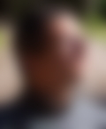
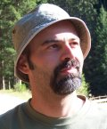

Nel Dubbio Salire -- Touching the void -- MAGNIS ITINERIBVS
![[flow: when challenges and skills are well balanced.]](http://wayback.archive.org/web/20060612060504/http://www.acm.org/ubiquity/views/f1.gif "visually definition of flow")
|  |  | |
| Marco | Alessandro | |
|
Classe 19??. Sa leggere e scrivere, buon senso dell'orientamento. Caporale degli Alpini. Nuotatore, corridore, ciclista. 1.75m 80kg. Programmatore C. Al ritorno dalla Translagorai parte per folleggiare in Spagna. |
Classe 1975. Sa leggere e scrivere. Obiettore di coscienza, forza assente. Apneista. 1.95m 87kg. Programmatore C++. Al ritorno dalla Translagorai si chiude in casa a studiare il kernel di plan9. |
e-mail: translagorai@gmail.com